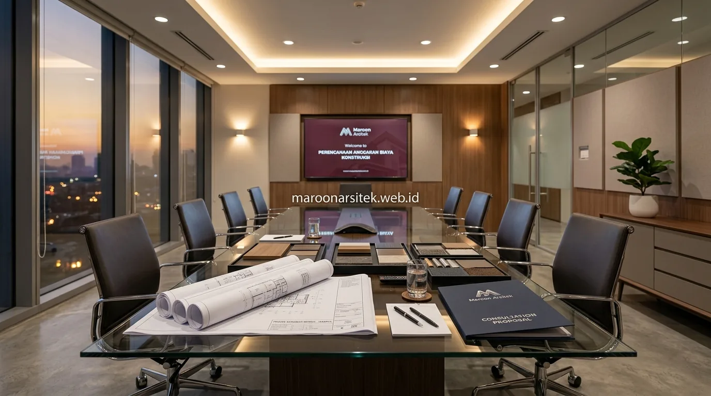

Banyak pemilik lahan merasa ragu saat ingin memulai proyek pembangunan hunian karena belum memiliki gambaran kisaran dana yang harus disiapkan. Menghubungi pihak kontraktor tanpa pemahaman dasar mengenai cara estimasi biaya sering kali menimbulkan kebingungan dalam menilai kewajaran penawaran harga. Memahami perhitungan kasar secara mandiri menjadi langkah strategis untuk memetakan kapasitas finansial keluarga. Bersama layanan jasa kontraktor rumah dari Maroon Arsitek, Anda dibimbing memahami setiap komponen biaya secara transparan sejak tahap perencanaan.
Rumus Dasar Perhitungan Luas Bangunan dan Estimasi Biaya
Metode paling praktis untuk mendapatkan estimasi awal biaya konstruksi menggunakan rumus perkalian luas lantai:
- Rumus Perhitungan:
Total Estimasi Anggaran = Luas Bangunan (m2) × Standar Biaya Material per m2. - Contoh Simulasi: Jika Anda merencanakan rumah tinggal seluas 120 m2 dengan spesifikasi kelas menengah (Rp 4.500.000 / m2), maka estimasi kasar biaya fisiknya adalah:
120 m2 × Rp 4.500.000 = Rp 540.000.000. - Metode ini memberikan patokan awal sebelum masuk ke tahap pembuatan gambar kerja teknis (*Detail Engineering Design* / DED).
Perbedaan Perhitungan untuk Rumah Satu Lantai dan Bertingkat
Penentuan luas bangunan yang akurat membedakan lantai dasar dengan lantai atas:
- Rumah 1 Lantai: Luas bangunan dihitung dari tapak lantai dasar yang tertutup atap (misalnya tipe 45 atau tipe 70).
- Rumah Bertingkat: Luas lantai dasar dijumlahkan dengan luas lantai dua. Sebagai contoh, di atas lahan 100 m2, lantai satu seluas 70 m2 dan lantai dua seluas 65 m2 menghasilkan total luas bangunan 135 m2.
- Rumah bertingkat juga memiliki komponen biaya tambahan untuk struktur plat dak beton lantai dua dan perkuatan pondasi cakar ayam (*footplat*).

Faktor Kelas Material yang Memengaruhi Estimasi per Meter Persegi
Pilihan kelas material menjadi variabel utama penentu besaran biaya per meter persegi:
- Kelas Standar / Ekonomis (Rp 3,5 – 4,5 Juta / m2): Menggunakan pondasi batu kali, dinding bata ringan, lantai keramik 40x40 atau 50x50, kusen aluminium standar, dan sanitari lokal.
- Kelas Menengah / Modern (Rp 4,5 – 6,5 Juta / m2): Struktur beton bertulang K-250, lantai granit tile 60x60, cat eksterior weatherproof premium, kusen aluminium powder coating, dan sanitari merk ternama.
- Kelas Mewah / Premium (Rp 7 Juta+ / m2): Lantai marmer import atau granit tile 120x60, dinding aksen batu alam travertine, pintu kayu solid kamper/jati, sanitaryware pintar, serta instalasi smart home.
Kombinasi Kelas Material pada Bagian Berbeda dari Rumah
Strategi mengoptimalkan anggaran tanpa mengorbankan estetika dan kekuatan struktur:
- Mempertahankan spesifikasi struktur beton dan pembesian SNI pada tingkat tertinggi demi keselamatan jangka panjang.
- Memilih material lantai premium pada area publik (ruang tamu dan ruang keluarga), sementara kamar tidur atau area servis menggunakan lantai granit standar.
- Pendekatan cerdas ini menghemat hingga 15–20% dari total pengeluaran tanpa mengurangi kemewahan tampak visual rumah.
Faktor Tambahan yang Membuat Estimasi Kasar Perlu Disesuaikan
Kondisi spesifik di lapangan yang dapat menggeser angka perhitungan awal:
- Daya Dukung Tanah: Lahan bekas rawa atau tanah lunak memerlukan pondasi tiang pancang / bore pile yang menambah pos biaya pondasi.
- Aksesibilitas Lokasi Proyek: Lokasi di dalam gang sempit yang tidak bisa dilalui truk molen ready-mix menambah ongkos langsir material secara manual.
- Topografi Kontur Lahan: Lahan miring atau bertebing membutuhkan pekerjaan cut and fill serta dinding penahan tanah (*retaining wall*).
Kapan Estimasi Kasar Perlu Diverifikasi dengan RAB Rinci
Transisi dari perkiraan kasar menuju komitmen kontrak resmi:
- Setelah gambar desain arsitektur 3D dan detail denah disetujui bersama tim arsitek.
- Menyusun tabel Bill of Quantities (BoQ) yang mencantumkan volume pekerjaan m3 beton, m2 dinding, jumlah sak semen, dan upah tukang harian/borongan.
- Mengunci harga satuan dalam Surat Perjanjian Kerja (SPK) untuk mencegah risiko pembengkakan biaya (*cost overrun*) di tengah jalan.